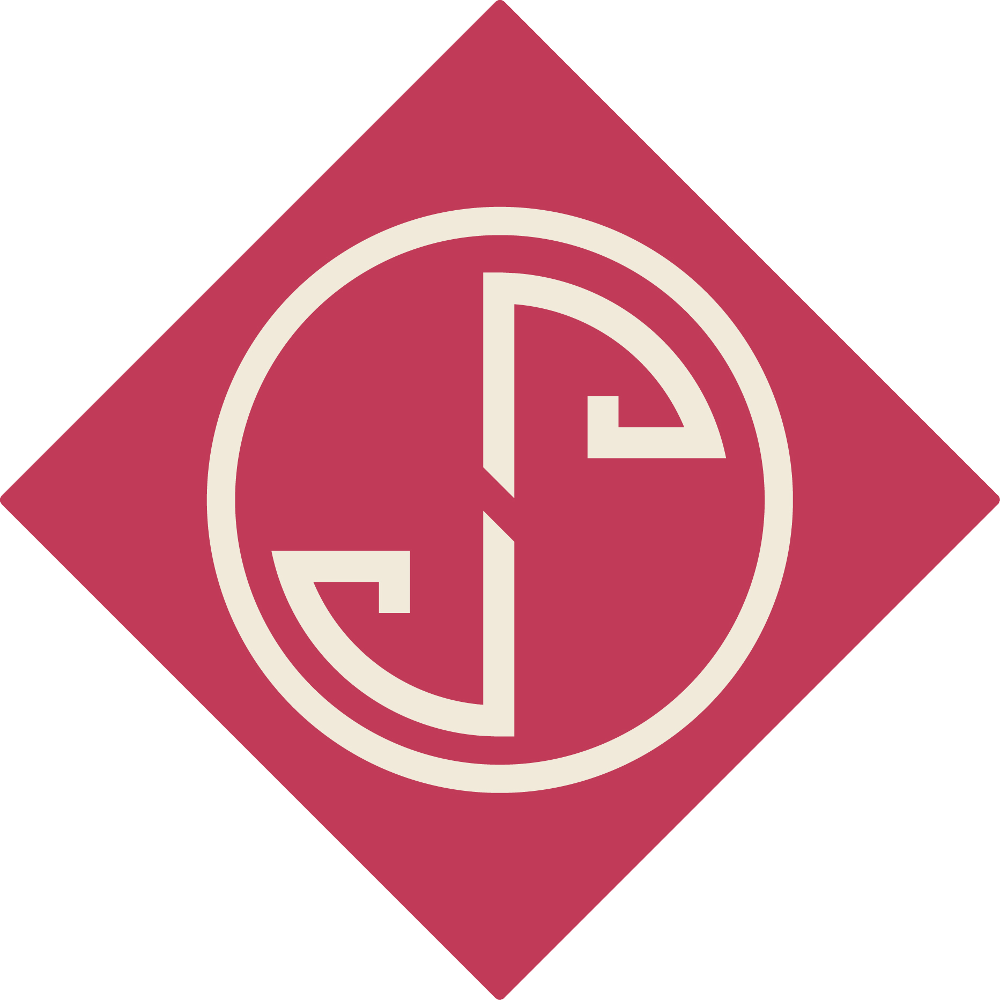
Jady Pamella
AI and Technology Leader
I lead high-performance engineering teams, design AI-powered platforms, and build technologies that create measurable impact in climate tech, finance, and the public sector.
Let's Build Something Meaningful Together!About Me
A strategic leader bridging technology and business, with a passion for sustainable innovation and digital transformation that creates meaningful impact.
Currently based in Stockholm, Sweden. I am an executive IT professional with over 10 years of experience transforming complex technical challenges into strategic business advantages. My journey spans from web development to executive leadership, always driven by innovation and excellence.
As co-founder of Tree++, I'm pioneering the intersection of AI, IoT, and environmental sustainability. My experience managing million-dollar budgets and leading cross-functional teams has prepared me to tackle global challenges through technology leadership.
I believe in technology as a force for positive change, whether it's developing AI-driven solutions that improve banking operations, creating innovative approaches to reforestation that can help combat climate change.
Career Highlights
Co-founder, Tree++
Leading a climate-tech startup developing AI-powered drones for reforestation
IT Manager, Bank of Brasília
Managed USD 1M+ budgets, led digital transformation initiatives
Dual Master's Degrees
Computer Science (Stockholm) & Cybersecurity (Brasília)
Swedish Institute Scholar
Recognized for Global Professional excellence
Core Expertise
Featured Projects
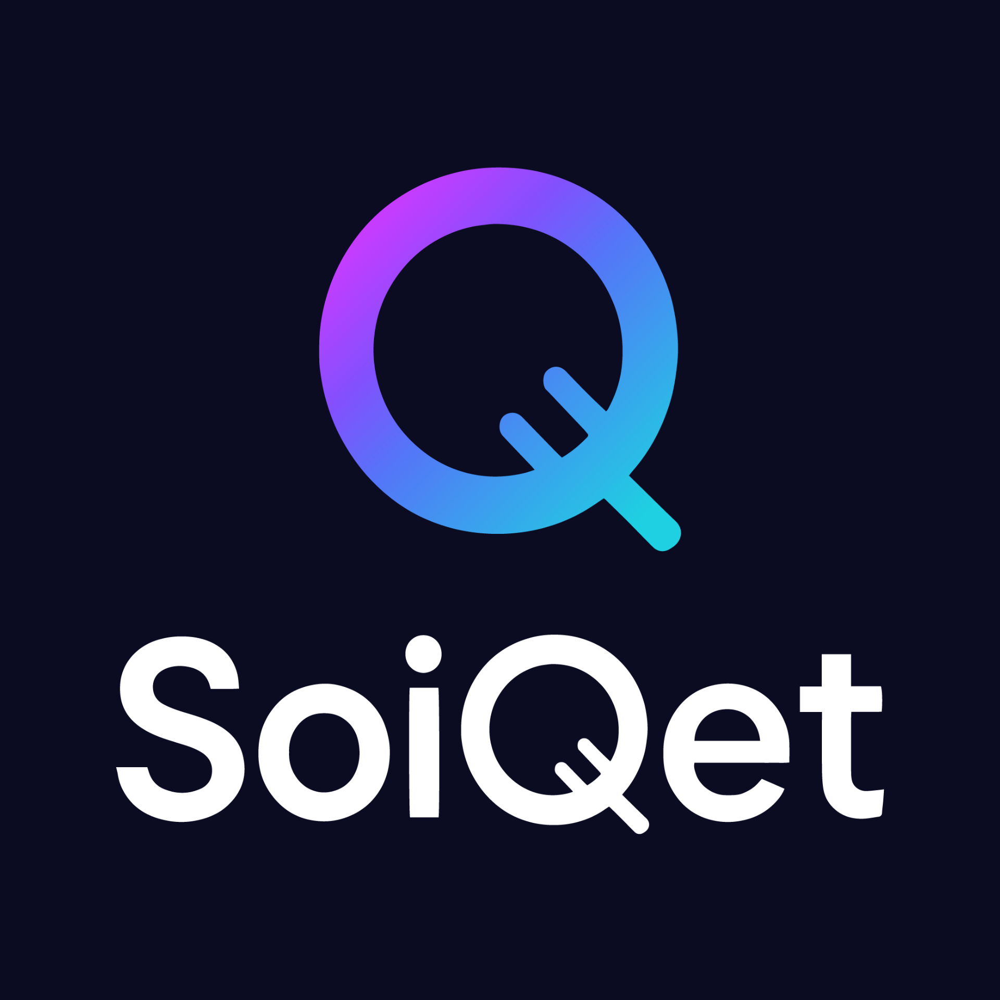
SoiQet
AI powered social media automation
AI platform that helps professionals and organizations plan, generate, and optimize content across social networks, with analytics and automation focused on consistency and engagement.
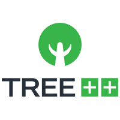
Tree++
Autonomous reforestation system
Climate tech startup using autonomous drones, AI, and IoT to support reforestation and forest monitoring, from mission planning to data collection and analysis for environmental partners.
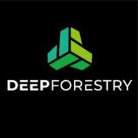
Deep Forestry
AI research collaboration
Research collaboration with Deep Forestry on autonomous systems for forest mapping and monitoring, combining drones, computer vision, and data analysis for sustainable forestry.
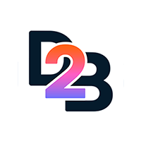
D2B - Dream to Business
Idea validation platform
Platform that helps founders validate business ideas through short video pitches, structured feedback, and gamified evaluation, using AI to cluster feedback and highlight next actions.
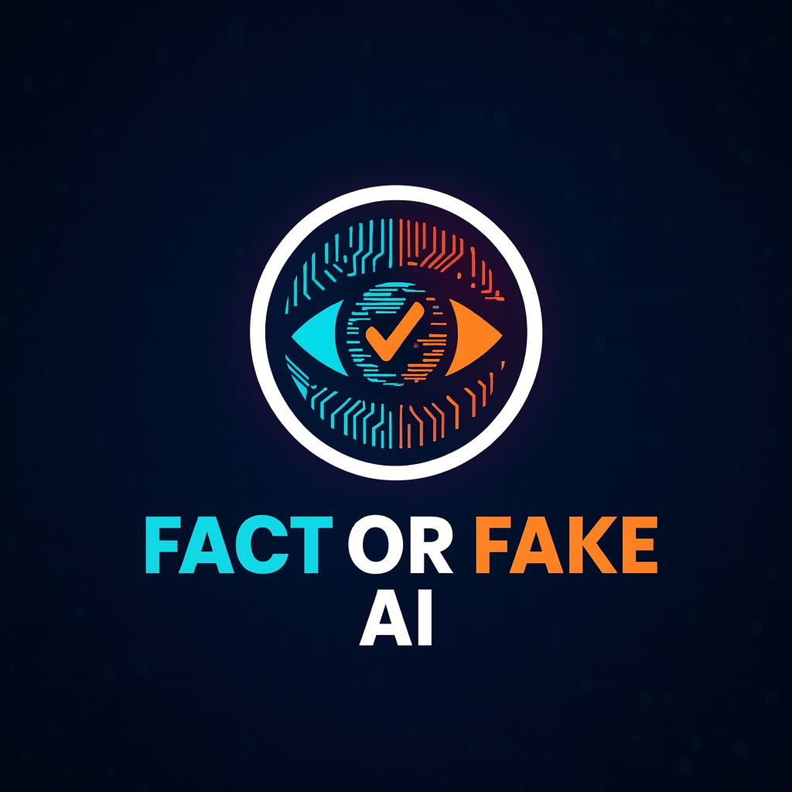
FactOrFakeAI
AI literacy and content authenticity
Educational project that compares real content and AI generated content to discuss detection, bias, and responsible AI, helping non technical audiences understand how modern AI works.
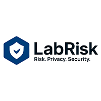
LabRisk
Cybersecurity and risk lab
Research lab focused on cybersecurity management, risk, and privacy in the public sector, including work on CIS controls, judiciary cybersecurity, and LGPD compliance in Brazil.
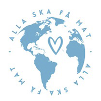
Alla Ska Få Mat
Social impact initiative
Community project in Sweden that organizes donations, volunteers, and communication to support families facing food insecurity, using digital tools for coordination and outreach.
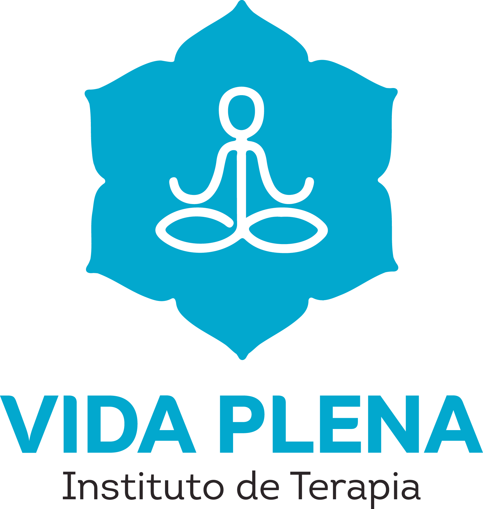
Insphas
Digital transformation for mental health institute
Volunteer IT leadership for Insphas Institute of Psychology, modernizing digital presence and infrastructure, including websites, content, and communication flows for mental health services.
Publications
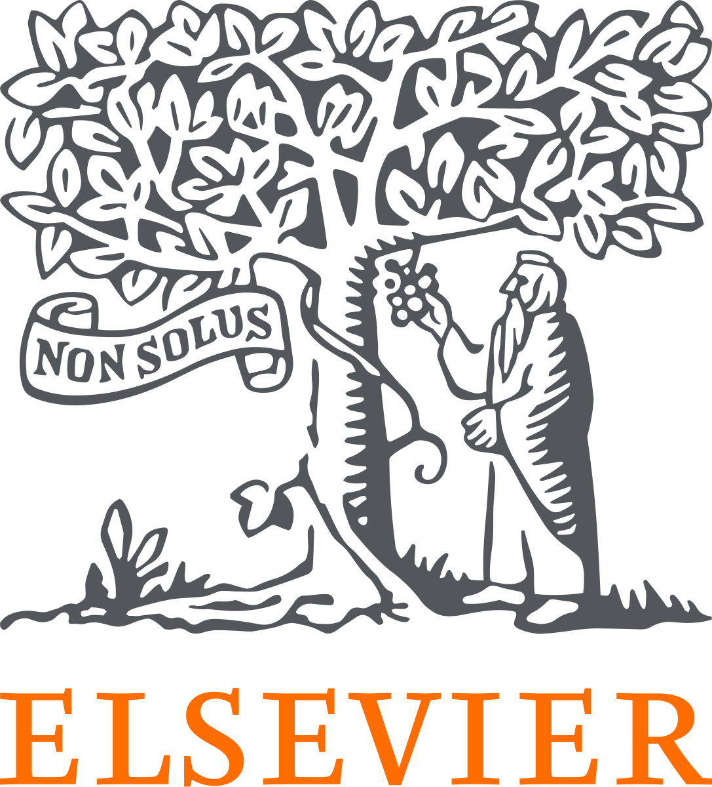
Enhancing Cybersecurity in the Judiciary: Integrating Additional Controls into the CIS Framework
Co-authored peer-reviewed study proposing an expanded CIS cybersecurity model for digital protection across the Brazilian judiciary. Published in one of the world’s leading cybersecurity journals.
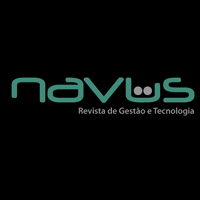
Cybersecurity Protection in the Brazilian Judiciary: A Comparative Analysis of State Court Security Structures
Research analyzing cybersecurity maturity and structural gaps in state courts across Brazil. Provides recommendations on governance, risk, and compliance to strengthen digital resilience.
Experience
SoiQet
Co-founder and Chief Innovation Officer
Stockholm, Sweden
- Leading technology strategy for climate tech startup with $500K+ seed funding, building cloud-based platform integrating AI models for carbon management.
- Architected microservices infrastructure (Kubernetes, Docker, AWS) supporting 10,000+ users and processing 1M+ data points daily for climate insights.
- Established MLOps pipelines (MLflow, TensorBoard) reducing model deployment time by 60% enabling rapid iteration on climate prediction algorithms.
- Built cross-functional team of 8 engineers, data scientists, and designers driving product development from concept to market launch.
Tree++
Co-founder and Chief Innovation Officer
Stockholm, Sweden
- Lead technical strategy, engineering roadmap, and sustainability-aligned vision for AI-powered autonomous drones for reforestation, managing fundraising, investor relations, and strategic partnerships.
- Architect end-to-end AI/IoT platform: computer vision for terrain analysis, autonomous flight control, real-time telemetry processing (1M+ events/day) using Python, TensorFlow, Kubernetes, and AWS.
- Build and mentor engineering team, overseeing hiring, performance management, delivery standards, and technical excellence.
- Manage budget allocation, burn rate optimization, and financial planning for business scalability and growth.
Bank of Brasília – BRB
IT Manager
Brasília, Brazil
- Managed $1M+ annual IT budget with full P&L accountability, reducing operational costs by 15% ($150K+ savings) through strategic vendor optimization and contract restructuring.
- Led team of 10+ IT professionals with full responsibility for hiring, performance management, career development, implementing COBIT, ITIL, Agile, and Lean IT frameworks.
- Improved compliance and audit accuracy by 40% redesigning Change and Configuration Management processes, reducing regulatory risk and ensuring business continuity.
- Led organizational transformation initiatives including Lean IT practices (20% waste reduction) and DevSecOps adoption across IT department.
Bank of Brasília – BRB
IT Analyst and DevOps Engineer
Brasília, Brazil
- Delivered $500K+ annual value through AI and automation initiatives: built production AI chatbot (Python, TensorFlow, NLP) reducing customer response time by 40% for 100K+ users.
- Architected DevSecOps CI/CD pipelines (Jenkins, GitLab, Docker, OpenShift, Kubernetes) reducing deployment time by 60% with zero security incidents over 2+ years.
- Developed Power BI executive dashboards enabling data-driven decisions for C-suite stakeholders and ensuring regulatory compliance (BACEN, LGPD).
- Collaborated directly with CIO, CFO, and COO to align IT initiatives with business strategy and objectives.
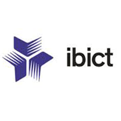
Brazilian Institute of Information in Science and Technology - IBICT
Research Engineer
Brasília, Brazil
- Customized Archivematica for Kubernetes and OpenShift deployment, enabling scalable digital preservation infrastructure for government agencies managing millions of digital assets.
- Supported national initiatives in knowledge management, data governance, and digital transformation for public sector with improved automation workflows.
Ministry of Integration and Regional Development – MCID
Software Engineer
Brasília, Brazil
- Modernized legacy PHP and MySQL systems improving scalability, maintainability, and performance for national integration services.
- Developed responsive web and mobile applications increasing citizen access to government digital services and platforms.
SENAI – National Industrial Training Service
Web Developer and Designer
Brasília, Brazil
- Developed e-learning platforms supporting 2,000+ students with interactive learning modules, progress tracking, and assessment tools.
- Built PHP and MySQL systems for statewide education programs, optimized UX for digital curriculum delivery and multi-device access.
SU Heroes - Hackathon Team
Team Leader
Stockholm, Sweden
- Lead multidisciplinary teams building applied AI automation and agentic AI systems, mentor students and engineers in AI/ML, cloud architecture, and rapid prototyping.
Stockholm University – SU
Teaching Assistant - Internet of Things
Stockholm, Sweden
- Support 200+ students in IoT coursework: Python programming, sensor integration (MQTT), edge computing, and data processing pipelines.
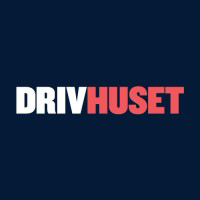
Drivhuset Stockholm – SU
Student Ambassador
Stockholm, Sweden
- Support founders and students in entrepreneurship programs, mentor on technology strategy and product development, promote innovation activities across Stockholm University.
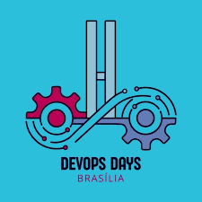
DevOpsDays Brasília
Volunteer Organizer
Brasília, Brazil
- Coordinate technical conferences with 250+ participants, develop partnerships with industry and academia, curate DevSecOps and AI/ML content.
Education
Stockholm University – SU
MSc in Data Science
Stockholm, Sweden
- Focus: Deep learning, computer vision, natural language processing, distributed systems, and scalable ML infrastructure.
- Master's Thesis: "Deep Learning Approach for Forest Species Classification" achieving 95%+ accuracy using CNN architectures on satellite imagery.
Massachusetts Institute of Technology – MIT
Designing and Building AI Products
Boston, USA
- 40-hour executive program on AI product development, deployment strategies, and scaling ML systems in production environments.
Descomplica
MBA in Innovation, Technology & Entrepreneurship
Brasília, Brazil
- Focus: Business model innovation, technology strategy, startup development, and lean startup methodology.
Descomplica
Postgraduate in Data Analysis
Brasília, Brazil
- Focus: Statistical modeling, machine learning algorithms, predictive analytics, data visualization, and business intelligence.
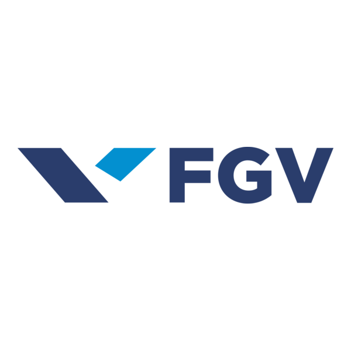
Fundação Getulio Vargas – FGV
MBA in Project Management
Brasília, Brazil
- Specialized in Agile methodologies, Scrum, PMBOK, risk management, stakeholder management, and change management for IT project delivery.
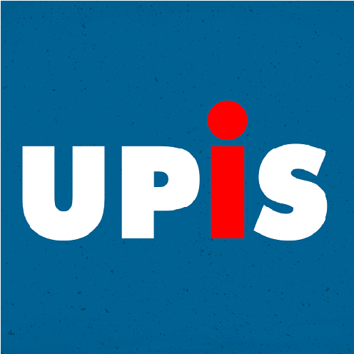
Faculdades Integradas – UPIS
BSc in Information Systems
Brasília, Brazil
- Focus: Algorithms, data structures, software engineering, database systems, and technology entrepreneurship fundamentals.
Certifications
Leadership
- Women's Leadership Program (SOUL, 2024)
- Self-Leadership Program (Hyper Island & Swedish Institute, 2024)
- Collaborative Approaches to Societal Issues (Stockholm School of Entrepreneurship, 2024)
AI & Data
- Designing & Building AI Products (MIT, 2022)
- Data Analysis (ENAP, 2023)
- Business Intelligence Foundation (Certiprof, 2024)
IT Governance
- DevOps Master (EXIN, 2020)
- COBIT 5 Foundation (ISACA, 2015)
- ITIL V3 Foundation (EXIN, 2015)
Agile & Process
- Scrum Foundation (Certiprof, 2019)
- Lean Six Sigma White Belt (Certiprof, 2024)
Language
- TOEFL iBT (ETS, 2024)